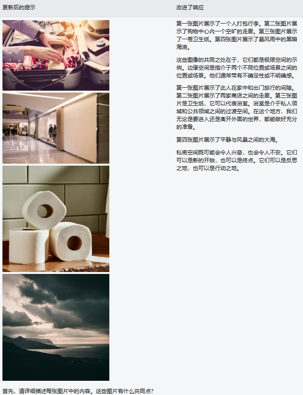

多模态概念#
Gemini 是针对多模态用例构建的一系列模型。
多模态模型是一种能够处理来自多种模态（包括图像和文本）的信息的模型。例如，您可以向模型发送一张美味佳肴的照片，让其撰写一篇关于此菜的短博客。
提示 |
回答 |
实际回答 |
|---|---|---|
根据这张图片写一篇引人入胜的简短博文。照片中应包含对膳食的描述，并谈论我的膳食准备历程。 |
备餐可以为您节省时间和金钱，而且还有助于您吃得更健康。这顿饭是健康美味的一餐很好的例子，可以轻松地提前准备好。 |
大家好！今天我想和大家分享一下我的膳食准备历程。我一直都很喜欢烹饪，但我总是觉得做饭很花时间。所以我决定尝试一下膳食准备，看看是否能节省时间。 |

多模态模型#
Gemini 是 Google DeepMind 开发的一系列生成式 AI 模型，专为多模态使用场景而设计。借助 Gemini API，您可以访问gemini-pro-vision和gemini-pro模型。如需了解 Gemini API 模型的规范，请参阅模型信息。
多模态提示#
借助 Gemini API，您可以向 Gemini 模型发送多模态提示。支持的模态包括文本和图片。
如需获取常规提示设计指导，请参阅提示设计策略。
支持的模型#
以下模型支持多模态提示响应。
gemini-pro-vision
多模态提示最佳实践#
可以按照以下最佳实践改进多模态提示：
提示设计基础知识
说明要具体：写出清晰简明的说明，尽量避免误解。
在提示中添加几个示例：使用切实可行的少样本示例来说明您想实现的目标。
逐步细分：将复杂的任务划分为多个易于管理的子目标，引导模型完成整个过程。
指定输出格式：在提示中，要求输出采用您想要的格式，例如 Markdown、JSON、HTML 等。
针对单图提示将图片放在前面：虽然 Gemini 可以按任意顺序处理图片和文本输入，但对于包含单张图片的提示，如果将其放在文本提示之前，可能会取得更好的效果。
如果模型没有从图片的相关部分绘制信息：添加提示，说明您希望提示从图片的哪些方面提取信息。
如果模型输出过于宽泛（未针对图片量身定制）： 在提示的开头，尝试要求模型描述图片，然后再提供任务说明，或者尝试让模型引用图片中的内容。
提示设计基础知识#
说明要具体#
清晰、详尽的提示效果最好。如果您有特定的输出，最好在提示中包含该要求，以确保获得所需的输出。
有时，提示的编写者可能看上去很清楚，但实际上并没有明确。如需自定义模型行为，请考虑您的提示可能被误解（误解），并确保您提供的说明具体而清晰。务必尽量避免误解
对于此机场登机牌图片，要求模型仅“描述此图片”可以生成一般描述。如果您需要模型解析图片中的时间和城市，您可以直接在提示中包含该请求。
提示 |
预计回答 |
实际回答 |
|---|---|---|
|
此图片显示了机场到达和出发信息面板。 |
这是机场出发航班信息显示屏，显示了从该机场出发的航班的目的地、出发时间和到达时间。 |
 描述这张图片。
描述这张图片。更新后的提示 |
预计回答 |
实际回答 |
|---|---|---|
|
10:50 莫斯科 |
一样。略 |
添加一些示例#
Gemini 模型可以接受多个输入，以用作示例来了解您想要的输出。添加这些样本有助于模型识别模式，并将指定图片和响应之间的关系应用于新样本。这也称为“少样本”学习。
在以下示例中，初始输出以句子形式编写，并且还包含国家/地区（巴西）。假设您希望输出采用其他格式或样式，并且只需要城市，而不想要国家/地区。在提示中添加少样本样本可以引导模型以您想要的方式响应。
提示 |
预计回答 |
实际回答 |
|---|---|---|
确定城市和地标。 |
地标建筑是巴西里约热内卢的基督救世主雕像。 |
里约热内卢，巴西，基督救世主像 |
更新后的提示 |
预计回答 |
实际回答 |
|---|---|---|
确定城市和地标。城市：罗马 ，地标：罗马斗兽场。城市：北京，地标：紫禁城 |
城市：里约热内卢，地标：基督救世主雕像 |
城市：里约热内卢，地标：基督像 |
分步解析#
对于像需要视觉理解和推理这样的复杂任务，将任务拆分为更小、更简单的步骤会很有帮助。或者，如果你在提示中直接要求模型“一步步思考”，也可以有效地解决问题。
提示 |
预计回答 |
实际回答 |
|---|---|---|
|
很快，你只剩 3 点掷骰子了。 |
当只剩下最后一卷卫生纸时。 |
 我什么时候会用完卫生纸？
我什么时候会用完卫生纸？更新后的提示 |
预计回答 |
实际回答 |
|---|---|---|
|
1. 这张图片中有 3 卷卫生纸。2. 一般人每天会使用大约 20 张卫生纸。3. 如果每个纸卷包含 200 张纸，则每个纸卷将持续 10 天左右。因此，这 3 个掷骰结果将持续大约一个月。 |
1. 3；2. 1卷；3. 3天 |
Tip
数学题或其他类型的文字题非常适合要求模型分步思考。
尝试指定输出格式#
一个常见问题是，模型输出需要采用某种格式（例如 Markdown、JSON、HTML），尤其是在模型输出需要由下游任务提取时。您可以尝试在提示中指示模型生成该格式的输出。以下是两个示例：
将此图片中的表解析为 Markdown 格式
请提供以下所有属性的列表：
食材、菜系类型、是否是素食（采用 JSON 格式）
针对单图提示，将图片放在前面#
虽然 Gemini 可以在提示中以任何顺序解释图片和文本，但在文本提示之前放置一张图片可能会获得更好的结果。在以下示例中，您会注意到图片显示在每个提示中的文本之前。
排查多模态提示问题#
如果您没有收到有用的响应，则可能需要对提示进行问题排查。您可以尝试以下这些策略。
如果模型不是从图片的相关部分绘制信息#
为了获得更具体的响应，您可以指出您希望提示从图片的哪些方面获取信息来作为响应。
提示 |
预计回答 |
实际回答 |
|---|---|---|
|
The diapers will last for 198 days before they run out. |
This box of diapers has 198 diapers. If a baby uses 8 diapers a day, the diapers will last 24.75 days. |
 How many days will these diapers last a baby?
How many days will these diapers last a baby?修改过的提示 |
预计回答 |
实际回答 |
|---|---|---|
|
The box contains 198 diapers. The box states the diapers are for a child weighing 22-37 lbs.The average child in this weight range is likely between 1 and 2 years old.A 2-year-old typically goes through 6 diapers per day, therefore, the diapers will last around 33 days (198/6). |
The box states the diapers are for a child weighing 22-27 lbs. The average 25 lb child goes through 8-10 diapers per day. With 198 diapers in the box, they will last 19-24 days. |
如果模型输出过于宽泛，并且未针对图片输入量身定制#
为了帮助模型定制其对图片的响应，在执行推理任务之前，请尝试让模型对图片进行描述。


还可以尝试明确要求模型引用图片中的内容。
同样的提示也适用于基于图片的广告素材输出。在下面的兔子示例中，明确要求模型包含图片的各个方面可以提高输出。

排查提示失败的哪个部分#
很难知道提示是因模型开始无法理解图片而失败，还是在理解图片之后没有执行正确的推理步骤。
为区分这些原因，请让模型描述图片中的内容。
在下面的示例中，如果模型在响应时提供与茶搭配的零食（例如爆米花），则可以首先排查问题，以确定模型是否正确识别出图片包含茶。
 另一种策略是让模型解释其推理。这有助于你缩小原因的哪一部分（如果有的话）。
另一种策略是让模型解释其推理。这有助于你缩小原因的哪一部分（如果有的话）。
调整采样参数#
在每个请求中，您不仅需要向模型发送多模态提示，还要向模型发送一组采样参数。模型可以针对不同的参数值生成不同的结果。尝试使用不同的参数来获得任务的最佳值。最常调整的参数如下：
温度
Top-P
Top-K
温度
温度用于在响应生成过程中进行采样，这发生在应用了 Top-P 和 Top-K 时。温度可以控制词元选择的随机性。较低的温度适合需要更确定性和较不开放式或创造性响应的提示，而较高的温度可以产生更加多样化或更具创意的结果。温度为 0 表示确定性，即始终选择概率最高的回答。
对于大多数应用场景，不妨先试着将温度设为 0.4。如果您需要更具创意的结果，请尝试调高温度。如果您观察到明显的幻觉，请尝试调低温度。 Top-K Top-K 可更改模型选择输出词元的方式。如果 Top-K 设为 1，表示下一个所选词元是模型词汇表的所有词元中概率最高的词元（也称为贪心解码）。如果 Top-K 设为 3，则表示系统将根据温度从三个概率最高的词元中选择下一个词元。
对于每个词元选择步骤，系统都会对概率最高的前 K 个词元进行采样。然后，系统会根据 Top-P 进一步过滤词元，并使用温度采样选择最终的词元。
指定较低的值可获得随机程度较低的回答，指定较高的值可获得随机程度较高的回答。 Top-K 的默认值为 32。 Top-P Top-P 可更改模型选择输出词元的方式。系统会按照概率从最高（见 Top-K）到最低的顺序选择词元，直到所选词元的概率总和等于 Top-P 的值。例如，如果词元 A、B 和 C 的概率为 0.6、0.3、0.1，并且 Top-P 的值为 0.9，则模型将根据温度选择 A 或 B 作为下一个词元，并排除 C 作为候选词元。
指定较低的值可获得随机程度较低的回答，指定较高的值可获得随机程度较高的回答。 Top-P 的默认值为 1.0。
后续步骤#
尝试使用 Google AI Studio编写您自己的多模态提示。
如需更深入地了解提示设计，请参阅提示策略主题。